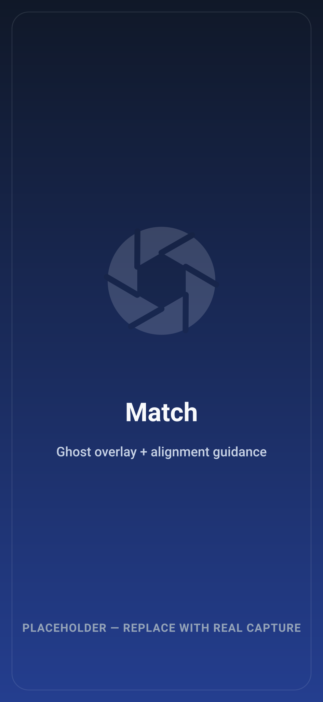
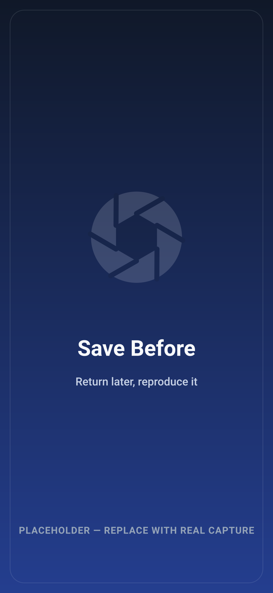
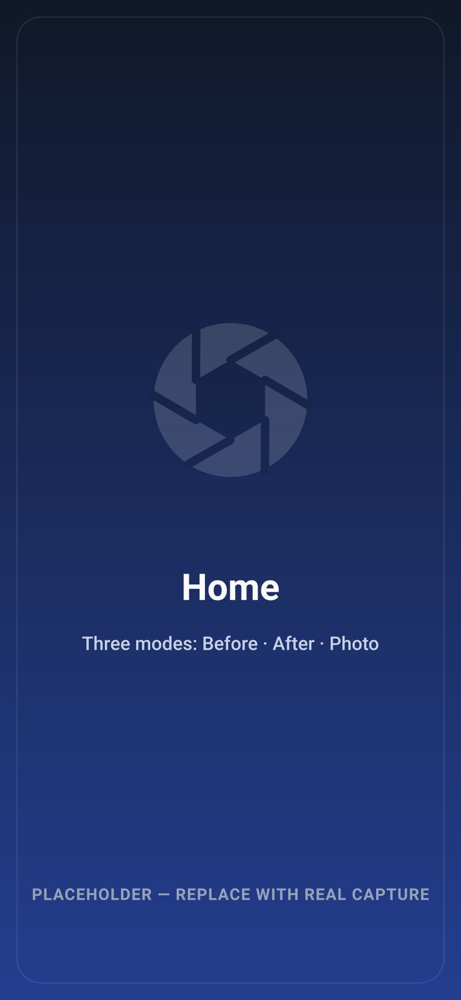
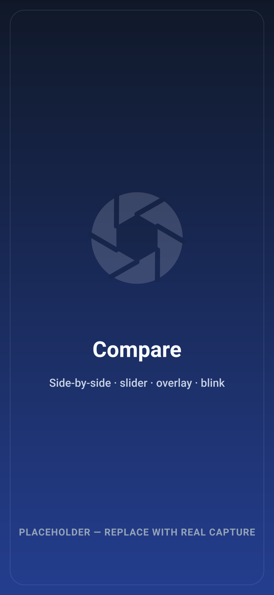
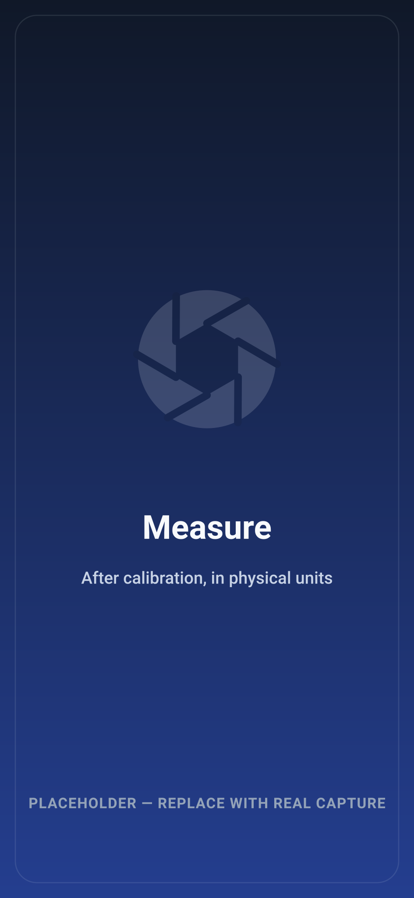

1
Match
A ghost overlay of the Before plus alignment guidance line the live preview up with the reference.
Take the same photograph again.
Standardized clinical photography for reproducible Before → After documentation. Create a Before reference today; months later, WISE guides you to reproduce its position, angle, scale and framing closely enough to compare with confidence.

A clinician photographs a lesion, a wound, a joint, a posture — then photographs it again weeks or months later. If the second photograph was taken from a different distance, angle or height, the two cannot honestly be compared. WISE exists to make the second photograph match the first.
Create a reference and record how it was taken — camera, zoom, flash, orientation, active tools, device tilt — as a reusable capture recipe.
Load a chosen Before as a translucent ghost over the live preview, and follow guidance into position: move closer, rotate slightly left.
An ordinary camera for documentation that needs no reference. A clinician who just wants a camera gets a camera; everything else is optional.
It is a clinical photography workflow, not a diagnostic device. Nine optional tools exist; four are on by default. Its purpose is photographic reproducibility — not diagnosis, and not certified measurement.
Six steps take a Before reference through to a report-ready comparison. Capture always stays possible — advisory warnings never block the shutter.
A ghost overlay of the Before plus alignment guidance line the live preview up with the reference.
Lighting and focus checks, advisory only. They inform the clinician; they never prevent a capture.
Take the After. Capture remains possible through every warning — the clinician stays in control.
Five ways to compare: side-by-side, slider, overlay, blink, and a visual difference view.
After calibration — and only then — measurements are shown in physical units, never before.
Export the original, annotated, measured, paired, or anonymized — report-ready.
The reference persists. A clinician can create and save a Before reference, then return weeks or months later, select it, align to its ghost, and capture a matching After — so the pair can be compared as though the camera never moved.
Existing photographs can also be imported as a Before reference, so a case that started before WISE can still get a standardized After.

Grouped by the job it does. Optional tools stay off until switched on, and the clinician's choices persist.
Persistent Before references, ghost overlay, reference lock and transform, alignment guidance, plus grid and level for framing.
Lighting and focus checks and level guidance — advisory, never blocking. Body-part and laterality context travels with the capture.
Built-in and user-created capture protocols bundle repeatable settings so a body region is captured the same way every time.
Side-by-side, slider, overlay and blink comparison, plus a difference view that shows visual change — labelled visual difference only.
Calibrate a photograph, then measure in physical units. Annotations and measurements are layers — the original is never modified.
Combined Before + After export, anonymized export, and offline, local-first operation — no automatic upload to the cloud.
Automatic calibration-marker detection is Planned — calibration works today by manual placement. Cloud and on-device AI ship as an architecture with no provider enabled; see the philosophy section below.

A protocol is a reusable, versioned set of capture settings. Apply it and the region is captured consistently — the same framing, the same tools, every time.
Privacy is a default, not an advanced setting. The core clinical workflow makes no network request.
These describe the product's design and are documented in the repository. They are engineering commitments — not a legal certification. WISE does not claim HIPAA or GDPR compliance. Read the privacy summary →
WISE Clinical Camera follows the WiseAiTechs product philosophy: medical trust, human-centred UX, privacy-first architecture, and reproducible, measurable documentation — with AI optional rather than forced.
Simple clinical workflows and professional medical design. The photograph is the hero; the home screen is a camera, not a dashboard. Confidence is presented as a reproducibility score — never as clinical accuracy.
The app is built with an AI abstraction so intelligent assistance can be added later — behind a feature flag, off by default, and refused under Privacy Mode.
Today no AI provider ships and the core runs with AI off. WISE Clinical Camera does not perform AI diagnosis. Distinguishing AI-ready architecture from available AI features is deliberate.
Screenshots below are placeholders until the owner supplies real captures — see the asset manifest to replace them.


Install the preview build and start standardizing your clinical photography.
Not seeing a download? A stable release asset may not be published yet. Watch the releases page →